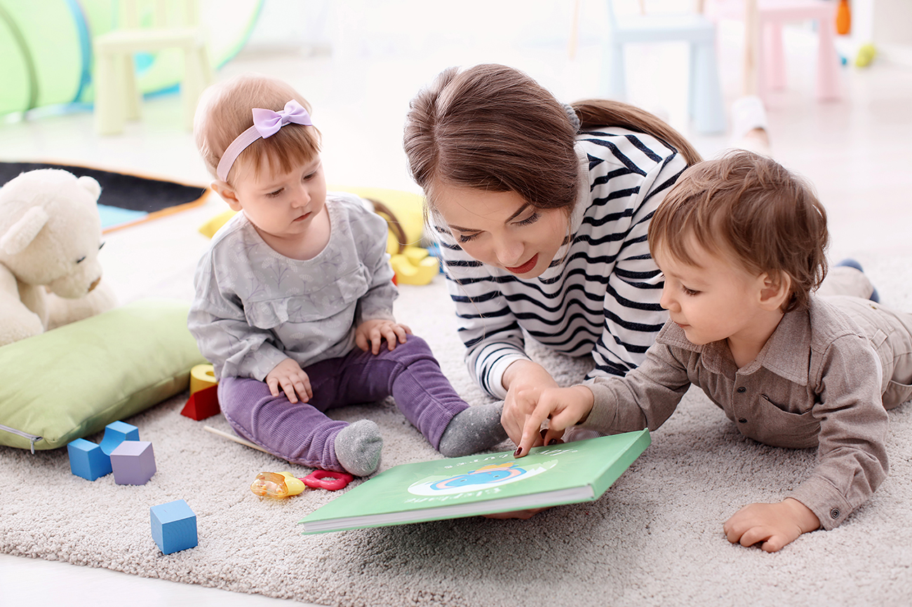

"The Essential Role of Language and Literacy in Early Childhood Education"
Introduction and Importance of Language and Literacy in Early Childhood Curriculum
Language and literacy are the fundamental components of early childhood education, essential for communication, cognitive development, and creative expression.When a child learn language, they can express their thoughts, emotions, and ideas, while literacy gives them the means to interact with written texts, which encourages creativity and imagination.A lifelong love of reading and storytelling, as well as critical thinking and problem solving abilitiesa, are encouraged by an environment rich in language and literacy. Children can explore and enhance their linguistic and literary abilities in dynamic and engaging ways by including creative activities into this curriculum topic.Increasing evidence suggests that limited language skills during childhood can have lifelong consequences in a range of areas including behaviour, learning, well-being, and future employment (Beitchman et al, 2008, Schoon et al, 2010, Chetty et al, 2011).

Resources, Material and Digital Technologies
Traditional Resources and Materials
- Books: A variety of selection of picture books, and storybooks which reflects various culture and themes.
- Writing Supplies: Journals, paper, crayons, markers and pencils for writing and drawing projects which helps to improve the literacy.
- Alphabet Blocks and Letter Cards: These kinds of resources can help child to learn language in the interesting way which also develop creative thinking among the childrens.
Digital Technologies:
- E-books and Audiobooks:This type of digital formats provide access to a variety of stories, often with interactive functions.
- Language and Literacy Apps:Apps such as Endless Alphabet,or Starfall that offer interactive literacy games and activities.
- Interactive Boards: Digital boards can play a vital role for collaborative writing, reading activities which can make easier for child to learn and understand.
Learning Experiences by Age Group
0-2 Years:
- Picture Book Exploration: Distributing board books with straightforward illustrations and recurrent text promotes early language development and visual awareness.
- Nursery Rhymes and Songs:Learning rhymes through vocalization improves vocabulary, rhythm, and auditory perception.
- Baby Sign Language: Introducing basic sign language to support communication before verbal skills develop.
3-5 Years:
- Story Sequencing: It is the process of putting stories in the correct sequence using picture cards while gaining knowledge of narrative structure.
- Letter Hunt Games: Letter-sound correspondences are reinforced through letter-hunt games, in which children look for items that begin with particular letters.
- Creative Writing Questions: Encouraging youngsters to write and think imaginatively by giving them basic questions or visuals to work from.
6-8 Years:
- Book Making: Encouraging children's to make their own picture books, where they can communicate their ideas via both writing and art.
- Reader's Theater: Children can develop their reading fluency and artistics expression by performing stories they have read in reader's theater.
- Digital Storytelling: It is the process of telling stories using apps or software that combine text, graphics and audio to foster multimedia literacy.
Pedagogical Practices and Teaching Strategies
- Creating a Print-Rich Environment: To encourage literacy, surround children's with a range of printed items, including books, labels, and charts.
- Encouraging Oral Language Development: To help children develop their expressive language and vocabulary, have discussions with them, pose open-ended questions, and use rich language yourself.
- Including Play-Based Learning: To make language and literacy learning engaging and relevant, incorporate games, role-play, and narrative into play.
- Differentiating Instruction: Differentiating instruction allows teachers to adapt lessons to the different language and literacy levels of their students while still providing support and challenge to all of them.
- Promoting Collaborative learning: Encouraging group activities allow kids to learn from each other's ideas and views such as shared reading or collaborative writing,is a great way to promote collaborative learning.
Early childhood instructors can effectively nurture creativity in young children through language and literacy curriculum by integraing these tools, learning experiences and pedagogical techniques. This will help to establish the foundation for strong communication skills and a love of reading and writing in young children.